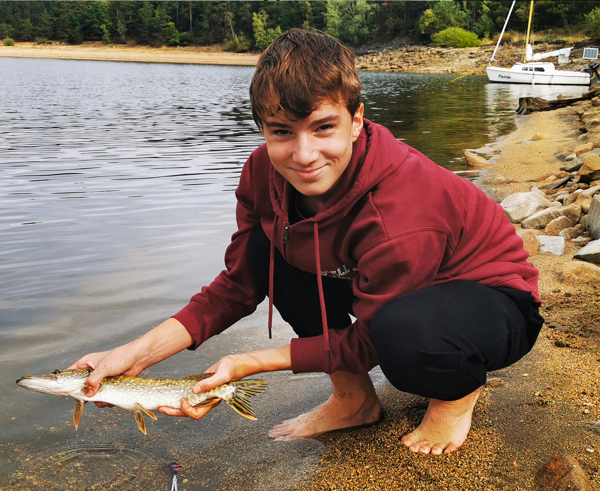
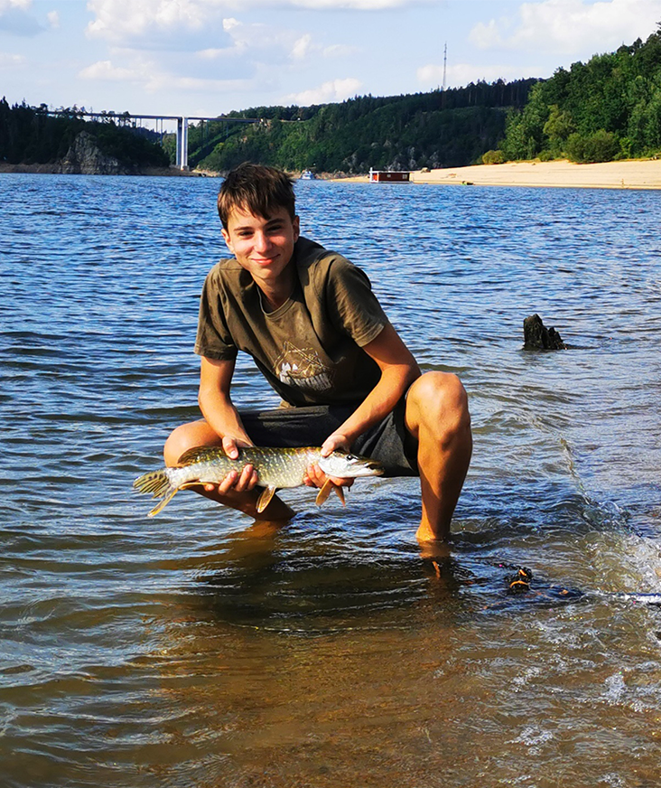
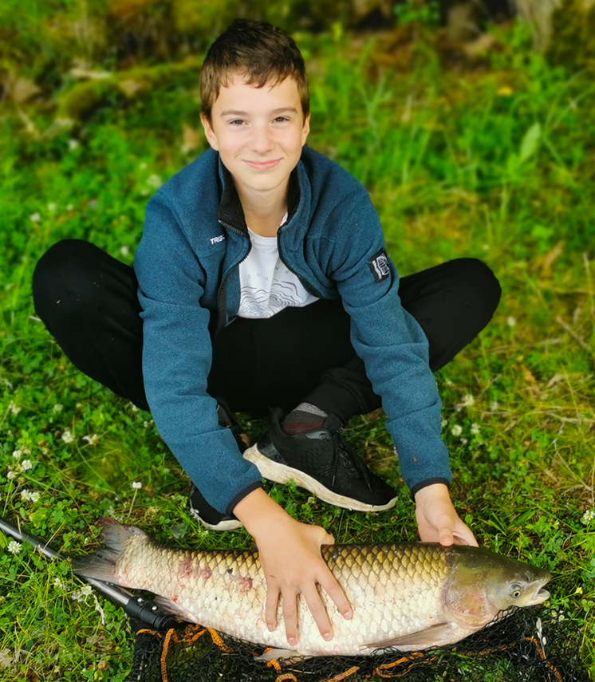
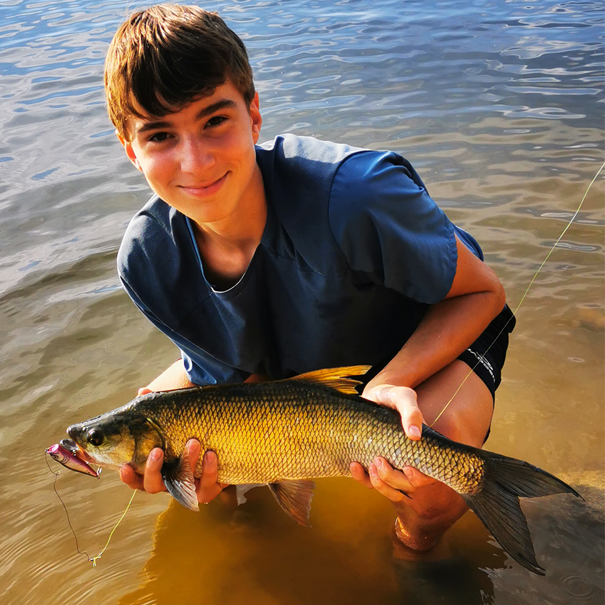

Portfolio
Domů
Počítače
Kytary
Grafické projekty
Fotbal
Jachting
Kolo
Rybaření
Jedním z mých koníčků je také rybaření.
Rybařím od mala na Berounce
a Orlíku.
Za tu dobu jsem nastřádal nespočet krásných úlovků.
Čas strávený u vody mám rád.
 
Více obrázků
 